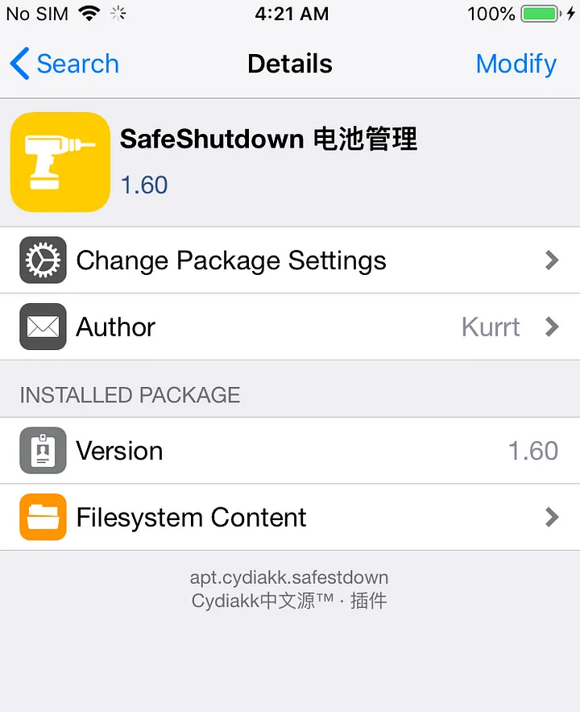

iOS Pen-testing dynamic analysis lab setup.
Hello everyone! In this blog post, I will share my experience and provide a guide on jailbreaking an iPhone and setting up a dynamic analysis lab for iOS penetration testing.
So I am hereby sharing what are the difficulties that I faced while doing iOS Jailbreaking, setting up the environment, and their solutions.
Hardware Information
Device Model: iPhone 6 Software version: 12.5.1
Preface
- Disclaimer
- Jailbreaking iPhone 6
- Installing Tools and Components
- Installing .ipa Files in iPhone
- Connect iPhone via OpenSSH
- Installing Burp suite Certificates
Disclaimer
Before proceeding, I want to emphasize that this blog post is for educational purposes and security research only.
Jailbreaking
To Jailbreak iPhone there are plenty of tools present on planet earth but all of them are not going to work when you do but here I will share the difficulties I faced during my Jailbreaking process.
I mostly use checkra1n to do the jailbreaking at first I had used iOS 11.4.8 on my iPhone and I used checkra1n to jailbreak, it worked as I expected. But when my device is completely turned off the jailbreaking is reversed and I used checkra1n to do the jailbreaking again but this time it didn’t work the device kept entering into recovery mode but never entered into DFU mode.
So I quickly did some google stuff and came up with the Idea to install unc0ver on iPhone through Safari browser and run jailbreaking through that.
Install unc0ver in iPhone
Download unc0ver in iPhone by directing to https://ipa-apps.me in Safari browser and select unc0ver v6.1.1 which will support iOS 11.0–14.3 devices.
Run unc0ver
After the installation is completed click unc0ver and click jailbreak

If any error occurred while the jailbreaking process then click on the Settings button on the left corner and apply Restore RootFS settings and click done.
Run Jailbreak again and again if the error is resolved it take you to the bootstrapping resource module for several seconds and once it is done then the device will be restarted and you can see that Cydia is being installed in the device.
What is Cydia?
Cydia app is the first un-official iPhone AppStore that contains jailbreak apps, mods, and other exclusive content, not available on Apple Store.
Installing Tools and Components
After Jailbreaking unc0ver will automatically install Cydia. Run Cydia now.
Install Appsync
What is Appsync?
AppSync Unified patches installed allowing you to install unsigned IPA files on iOS. AppSync can be used to clone installed apps, download fake signed IPAs, and also assist in the development of iOS apps using Xcode.
AppSync Unified should not be used to pirate iOS applications. After jailbreaking iOS using tools like unc0ver or checkra1n you can patch any IPA package downloaded directly on your iPhone. Install AppSync Unified and forget about certificate revokes, not working apps, faded icons, etc. Also, apps installed from 3rd party App Stores should work.
Installation
Run Cydia and Go to Software Source >> Edit >> Add >> Input Source Address: cydia.angelxwind.net to add the plug-in source, and wait for the addition to be completed. Once the process is completed you can see the repo in the sources.
After the addition is complete, in the software source list, find the source address we just added (note the address below the source name (Karen Repo)
Go to “Source-Plugin” by clicking on it and search Appsync Unified patch in the search bar and click Install in the upper right corner. (You can also search for appsync to install directly in Cydia’s search).

After the installation is complete, restart SpringBoard as prompted. Open Cydia again, enter the “installed” list from the bottom, you can see that AppSync has been successfully installed.
Install AFC2 Patch
What is AFC2?
AFC stands for “Apple File Conduit” and is how computer applications such as iTunes and iPhoto can read and write files from your device over USB.
AFC is “jailed” and only allows access to “media” (such as photos, music, and data for apps from the App Store). This package creates a new service, “AFC2”, with full filesystem access. If you use a USB device management tool, it might need AFC2 to fully work.
Installation
After jailbreaking through unc0ver, the new version of the afc2 patch comes with the BigBoss source in the installed Cydia. The full name of afc2 is [Apple File Conduit “2”] Open Cydia, enter [Search] from the bottom, directly search for Apple File to see the afc2 patch file.
Just like installing Appsync, click Install in the upper right corner and wait for the installation to complete.
After the installation is complete, restart SpringBoard. In the “Installed” list, you can see the [Apple File Conduit “2”] patch that has been successfully installed, namely afc2.
For more info:
Install Frida
What is Frida, exactly?
It’s Greasemonkey for native apps, or, put in more technical terms, it’s a dynamic code instrumentation toolkit. It lets you inject snippets of JavaScript or your own library into native apps on Windows, macOS, GNU/Linux, iOS, Android, and QNX. Frida also provides you with some simple tools built on top of the Frida API. These can be used as-is, tweaked to your needs, or serve as examples of how to use the API.
Installation
Frida supports two modes of operation, depending on whether your iOS device is jailbroken or not.
- Direct to https://frida.re/docs/ios/
- Follow the steps in the document
- Select Frida for Pre-A12 devices and run frida-ps -U in your machine
More info: https://frida.re/docs/ios/
Installing .ipa Files in iPhone
To install unsigned .ipa files in the iPhone use 3utools.
Installation
Check the device is jailbroken and the AFC2 patch is installed or not as below, id the AFC2 is not installed it will show you like install afc2
Select Apps in the left pane and select import & install IPA to select your IPA file and the file will be installed.
Installing Burp suite Certificates
Now we need to install burp suite certificates to intercept the iPhone Application traffics.
- Connect to wifi connection both the iOS and your Laptop devices should be in same wifi connection.
- Fire-up the Burp suite and configure the proxy settings as your need and set proxy listener into all interfaces
- Configure proxy in iPhone as your laptop IP and PORT as your Proxy listener bind PORT by default it is 8080. Now open the Safari browser or any other browser and direct to the proxy address you configured the burp suite page will appear and at the right corner click CA Certificate which will download a CA Certificate.
- Once the certificate is downloaded the device will prompt to review the certificate click -> review and click -> verify to verify and install the CA Certificate or do manually by visiting Settings ->General ->Profiles & Device Management -> Portswigger CA -> verify.
After you verified the device will the green checkmark as verified
- Now we need to enable the settings for the device to trust the root certificates. Direct to settings ->General -> About ->Certificate Trust Settings ->click enable slide button to trust the certificate.
Now we are able to intercept the iPhone traffic in the Burp Suite.
Connect to iPhone via OpenSSH
Once the Jailbreaking is done the Openssh will automatically be installed in the device. We can connect to the device through an SSH connection.
ssh root@<device IP>
The default password for the device is alpine.
Permanent Jailbreaking
To do permanent jailbreaking the process we already did was untethered jailbreaking which is a temporary one once the device is restarted or powered off due to no power in the battery all the jailbroken core files will be deleted. To prevent this kind of problem we should install a tweak named SafeShutdown from Cydia.
Install SafeShutdown
Open Cydia after the jailbreaking is successful and add sources as http://apt.cydiakk.com the source repository will be updated.
Once the update is completed now click the repo from the sources tab and search as SafeShutdown and choose the Chinese version.

Install the tweak

Configure SafeShutdown
Once the SafeShutdoen tweak is installed the springboard will be restarted and you can see that the tweak in settings.
Open the SafeShutdown Settings and Turn Off the Tweak Enabled option
Then open Shutdown Settings and Turn on Hold Lock instead settings option
Then go back to SafeShutdown settings and open Power Down Menu and Turn off all enabled sliders other than SafeShutdown.
Now go back and enable the Tweak Enabled which is we turned off earlier and click Respring it will update the setting to your device. Now you can turn off the iPhone with SafeShutdown settings the Jaiblroken files will not be deleted.
For More on iOS Application Penetration Testing
- https://medium.com/inbughunters/basic-ios-apps-security-testing-lab-1-2bf37c2a7d15
- https://web.securityinnovation.com/hubfs/iOS%20Hacking%20Guide.pdf
- https://www.udemy.com/course/hacking-and-pentesting-ios-applications/
- https://www.pentesteracademy.com/course?id=2
- https://resources.infosecinstitute.com/topic/ios-application-security-part-1-setting-up-a-mobile-pentesting-platform/
- https://www.packtpub.com/product/learning-ios-penetration-testing/9781785883255
- Install and Configure SafeShutdown: https://www.youtube.com/watch?v=XHiwvZ4HCIM&t=323s
Thank you for reading.
For more updates and insights, follow me on Twitter: @thevillagehacker.